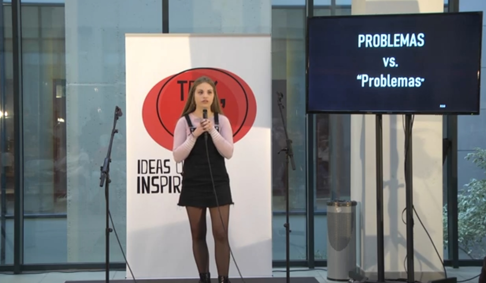

Actividades Dirigidas
En este apartado podrás encontrar todas las Actividades Dirigidas de la asignatura Periodismo de Datos II.
Sobre mí
Soy Inés Romero Caro, tengo 22 años y me graduadé en Periodismo por la Universitat Jaume I de Castelló. Soy una persona apasionada de la comunicación digital, la cultura multimedia y las redes sociales. Por ello, estoy estudiando un Máster en Periodismo Digital y de Datos en la Universidad Nebrija, en Madrid. Además, estoy haciendo mis prácticas en la web de noticias de Onda Cero.
Me gusta plasmar historias a través de nuevas narrativas creativas, pero que emocionen y hagan partícipe a todo aquel que las lea. Mi objetivo profesional es adentrarme en el nuevo panorama mediático, conectar con él y sacarle el máximo partido.
Concurso 'Talk 10' de la Universitat Jaume I de Castelló
Contacto
Si quieres contactar conmigo, rellena este formulario y mándame un mensaje.